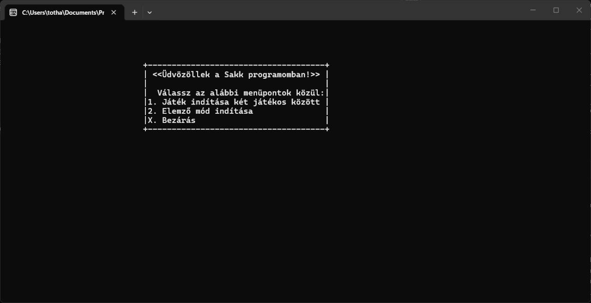

Selected work
-
01
Chess TUI
A full chess program for the terminal, written in C. It enforces every rule — castling, en passant, promotion, check and checkmate — and includes an analysis mode that replays a saved game move by move with branching variations.

-
02
Doppler Effect App
An Android app that measures the acoustic Doppler shift in real time. It tracks the pitch of incoming sound and visualises the rise as a source approaches and the drop as it passes — built as a physics project to demonstrate the effect in the field.

-
03
YouTube to WAV
A small, clean web app that converts any YouTube video into a WAV audio file. A Flask backend wires up yt-dlp and FFmpeg behind a plain HTML/CSS/JS frontend.